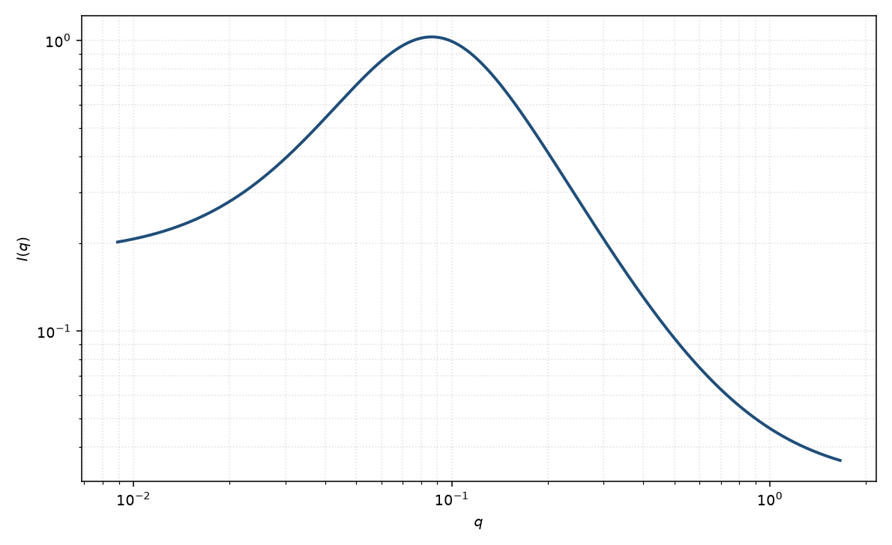

聚电解质
polyelectrolyte
适用场景
半柔性带电链在半稀释区常出现静电相关峰，并在更低 $q$ 有关联长度。Borue–Erukhimovich（BE）型分母把屏蔽 $\kappa$ 与峰位 $q_*$ 写进同一个有理式；物理图像来自 Barrat–Joanny 的静电持久长度与 Dobrynin 的标度。
中性链回到排除体积或 Debye。峰非常宽且像微乳时，Teubner–Strey 也可能拟合，但参数解释不同。
物理图像
静电把单体关联变成带峰的结构因子。BE 形式 $I\propto (q^2+\kappa^2)/[(q^2+\kappa^2)^2+q_*^4]$ 给出 $q\sim q_*$ 的峰，高盐（$\kappa$ 大）时峰被抹掉，回到洛伦兹型。
链本身仍是半柔性：高 $q$ 可再接到 $q^{-1}$ 或排除体积尾。取向在剪切聚电解质中常见，粉末峰只给各向同性 $q_*$。
示意图

核心公式
Borue–Erukhimovich 型聚电解质强度
$$I(q)=\frac{C(q^2+\kappa^2)}{(q^2+\kappa^2)^2+q_*^4}+B.$$$\kappa$ 为 Debye 屏蔽波矢，$q_*$ 控制峰位。无盐、半稀释时 $q_*$ 随浓度升高。高 $q$ 链统计需另接形式因子。
参数表
| 参数 | 符号 | 含义 | 单位 | 典型范围 |
|---|---|---|---|---|
| 峰位参数 | $q_*$ | 静电相关峰 | Å$^{-1}$ | 随浓度、离子强度变 |
| 屏蔽 | $\kappa$ | Debye 屏蔽波矢 | Å$^{-1}$ | 加盐增大 |
| 幅度 | $C$ | 涨落幅度 | 与强度单位一致 | 与衬度、浓度相关 |
| 标度 / 本底 | $\mathrm{scale}$, $B$ | 前置因子与常数本底 | 与强度单位一致 | 实验相关 |
拟合注意
取向：剪切或电场下 $q_*$ 可变成各向异性。一维粉末拟合会低估取向。
多分散链长主要改低 $q$，峰位更受浓度控制。磁性标记的带电链：磁通道通常没有同一静电峰。
可辨识性：$\kappa$ 与 $q_*$ 在宽峰时相关。先根据加盐是否消峰判断是不是静电峰，再放开参数。不要把 $2\pi/q_*$ 读成硬球半径。
相近模型
- 聚合物排除体积 — 中性良溶剂链，无静电峰。
- 宽峰 — 经验峰位，不引入屏蔽 $\kappa$。
- Teubner–Strey — 同样可出现峰，但是微乳 $q^4$ 展开。
参考文献
- Borue, V. Yu.; Erukhimovich, I. Ya. A statistical theory of weakly charged polyelectrolytes: fluctuations, equation of state, and microphase separation. Macromolecules 1988, 21, 3240–3249. DOI: 10.1021/ma00189a019
- Dobrynin, A. V.; Colby, R. H.; Rubinstein, M. Scaling theory of polyelectrolyte solutions. Macromolecules 1995, 28, 1859–1871. DOI: 10.1021/ma00110a021